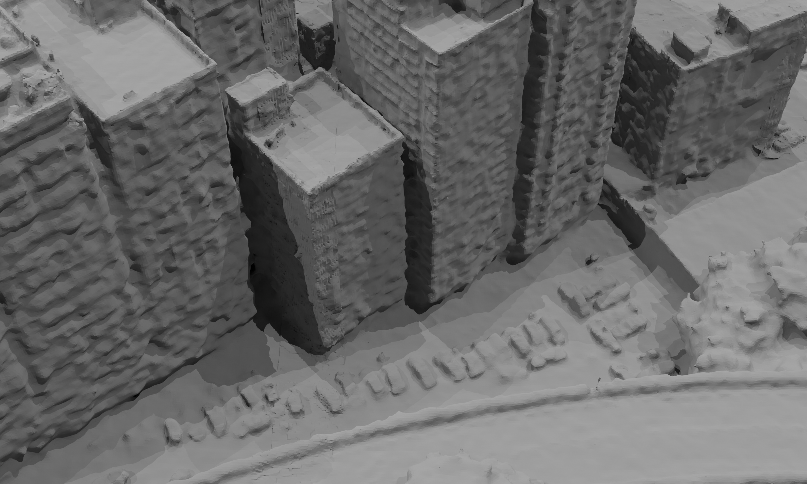
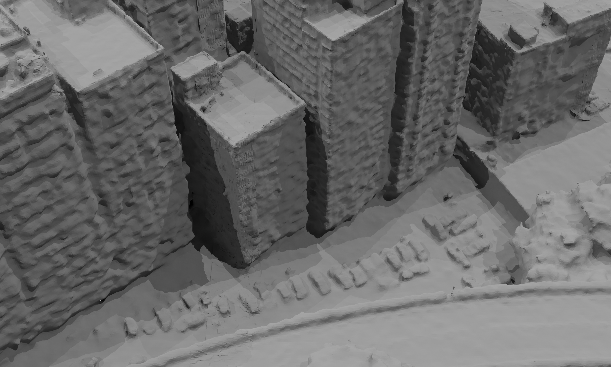
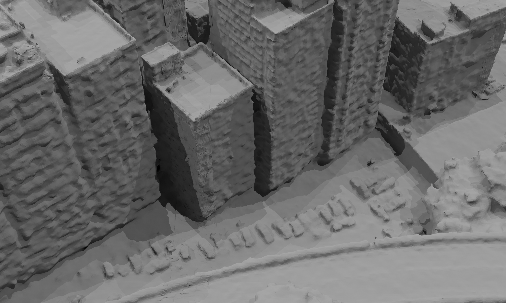

Comparison on Urbanscene3D
Polytech


Sciart


Residence


 



Neural surface reconstruction (NSR) has been shown to have huge potential for 3D reconstruction from multiview images. However, current NSR methods struggle to reconstruct high-quality surfaces due to severe shape-radiance ambiguities when they meet the large-scale scenes captured from aircraft or UAVs, which often contain heavy shadows, illumination variations, and low texture areas.
We present MegaSurf, which efficiently and robustly integrates Multiview Stereo (MVS) priors to solve large geometric errors due to the intrinsic shape-radiance ambiguity while preserving high-precision details.
Specifically, we propose a lightweight MVS module to rapidly diffuse high-confidence planar geometric information from structure-from-motion (SFM) points, where ambiguities often occur, to guide the NSR. Further, we propose a two-stage sampling-guided NSR approach. We pre-train a sampling proposal network using MVS priors to indicate the next stage sampling position and let these positions represent the scene first at the next stage of training. This strategy helps to overcome large geometric errors due to ambiguity while preserving the high-fidelity details.
Our MegaSurf improves the speed of prior acquisition by more than four times that of the SOTA MVS methods and achieves the best reconstruction accuracy on large-scale datasets compared to previous methods.
